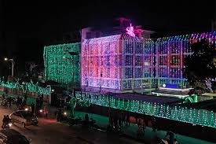

Nepali Culture Explorer
Nepali Culture ExplorerTihar
तिहार(यमपञ्चक)
तिहार उज्यालो, सयपत्रीको सुगन्ध, प्रकृति/जनावरप्रतिको कृतज्ञता र दाजुभाइ-दिदीबहिनीको अटुट प्रेमको महान् पर्व हो।
- अवधि: कुल ५ दिन (कार्तिक महिनाको यमपञ्चक)
- मुख्य सन्देश: अन्धकारमाथि उज्यालोको विजय, प्रकृति र मानवबीचको सहअस्तित्व, र पारिवारिक आत्मीयता
- मुख्य आकर्षण: दीपावली, काग/कुकुर/गाई पूजा, लक्ष्मीपूजा, देउसी-भैलो, र सप्तरङ्गी भाइटीका
Visuals of Tihar

Tihar Music
१. तिहार किन मनाइन्छ? (पौराणिक कथा र कारण)
तिहार (यमपञ्चक) मनाउनुको पछाडि मुख्यतया दुईवटा पौराणिक कथा र कारणहरू छन्:
- यमराज र यमुनाको कथा: मृत्युका देवता यमराजले आफ्नी बहिनी यमुनाको निमन्त्रणा स्वीकार गरी ५ दिनसम्म बहिनीको घरमा अतिथि बनेर बसेका थिए। बहिनी यमुनाले दाइलाई श्रद्धापूर्वक पूजा गरी भाइटीका लगाइदिएकी थिइन्। खुसी भएका यमराजले "आजका दिन बहिनीको हातबाट टीका लगाउने दाजुभाइको आयु लामो हुनेछ र अकाल मृत्यु हुनेछैन" भनी वरदान दिएका थिए।
- माता लक्ष्मी र बलि राजाको कथा: दानवीर राजा बलिको भक्तिबाट प्रसन्न भई भगवान् विष्णुले पाताल लोकको राज्य सुम्पिएका थिए। कार्तिक कृष्ण औँसीका दिन धनकी देवी लक्ष्मीको पूजा गरी घर-घरमा दीपावली गर्नाले दरिद्रता हट्छ र सुख-समृद्धि आउँछ भन्ने पौराणिक मान्यता छ।
२. तिहारको पौराणिक तथा सांस्कृतिक महत्त्व
- प्रकृति र जनावरहरूप्रति कृतज्ञता: तिहार मात्र मानिसको पर्व होइन; यसमा काग (खबरिया), कुकुर (रक्षक), गाय/गोरु (कृषि र समृद्धि) जस्ता पशुपन्छीहरूको पूजा गरेर मानव र प्रकृतिबीचको गहिरो सम्बन्ध दर्शाइन्छ।
- दाजुभाइ र दिदीबहिनीको पवित्र प्रेम: भाइटीकाले दिदीबहिनी र दाजुभाइबीचको स्नेह, सम्मान र दायित्वलाई अझ प्रगाढ बनाउँछ।
- उज्यालो र सकारात्मकताको प्रतीक: तिहारमा बालिने दियो र दीपावलीले अज्ञानता, अन्धकार र नकारात्मक ऊर्जालाई पछाडि पार्दै जीवनमा उज्यालो र सकारात्मकता ल्याउने सन्देश दिन्छ।
तिहारका ५ दिन (यमपञ्चक)
- दिन १ - काग तिहार: यमदूत कागलाई पूजा गरी अन्न-खाना दिइन्छ।
- दिन २ - कुकुर तिहार: मानिसको रक्षक कुकुरलाई माला, टीका र मीठो खानाले सम्मान गरिन्छ।
- दिन ३ - लक्ष्मीपूजा: बिहान गाईपूजा र साँझ झिलीमिली बत्ती बालेर लक्ष्मी पूजा तथा भैलो खेलिन्छ।
- दिन ४ - गोवर्धन / म्ह पूजा: गोरु र गोवर्धन पर्वतको पूजा; नेवार समुदायमा आत्माको शुद्धी (म्ह पूजा) र देउसी।
- दिन ५ - भाइटीका: दिदीबहिनीले दाजुभाइलाई सप्तरङ्गी टीका, मखमली माला र ओखर फुटाएर दीर्घायुको शुभकामना दिन्छन्।
Tihar's Most Beautiful Aspect
"तिहारको सबैभन्दा सुन्दर पक्ष भनेको 'झिलीमिली उज्यालो, सयपत्रीको सुगन्ध र अटुट आत्मीयता' हो। घर-आँगनमा बालिएका दियोको प्रकाश, मखमली-सयपत्रीको माला, आँगनमा गुञ्जिने देउसी-भैलोको लय र दिदीबहिनीको हातबाट लगाइने सप्तरङ्गी टीकाले सिङ्गो समाजलाई उज्यालो र खुसीले भर्छ।"